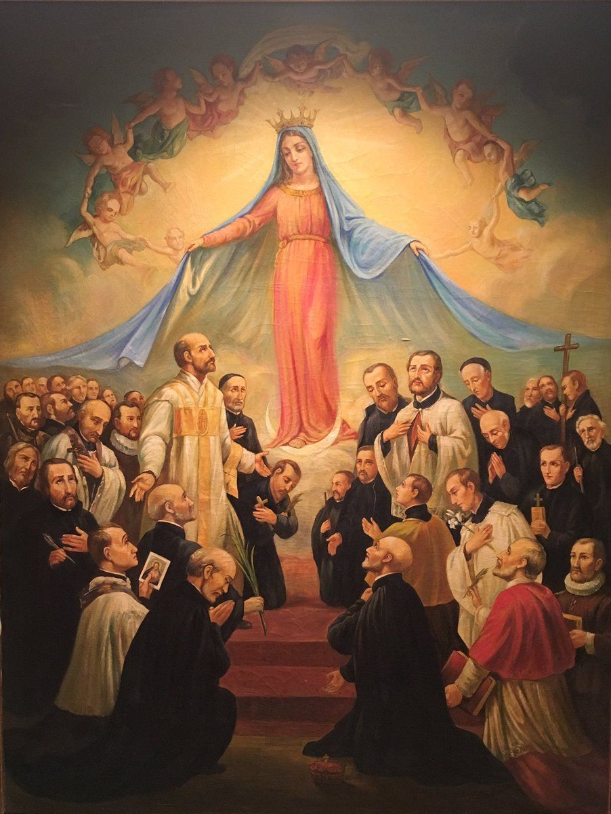

Zbirka
Filtri
Djelovanje Sve
Područja djelovanja i iskustva opisana u životopisima.
Razdoblje Sve
Stoljeća života prema dostupnim podacima. Kad rođenje nije poznato, navode se potvrđena razdoblja života.
Status Sve
Odaberite svece, blaženike, sluge Božje ili laike.
Skupine Sve
Povijesne i druge skupine prema kojima je organizirana zbirka.
Učitavanje zbirke…
Nema rezultata.
Pokušajte s drugim pojmom ili uklonite neke od odabranih filtara. Profile možete spremiti oznakom knjižne oznake.